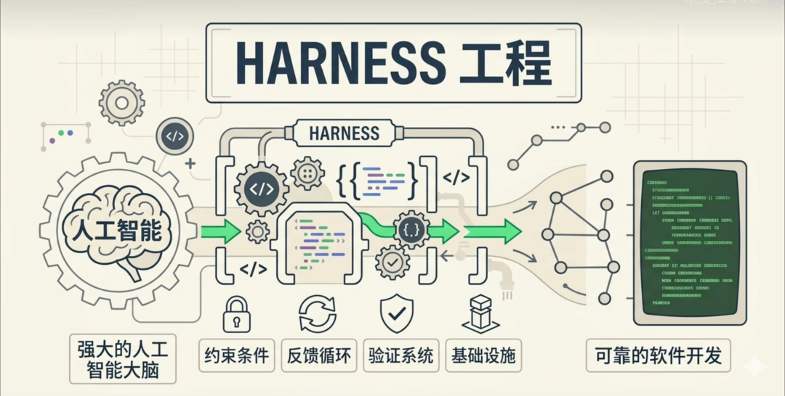
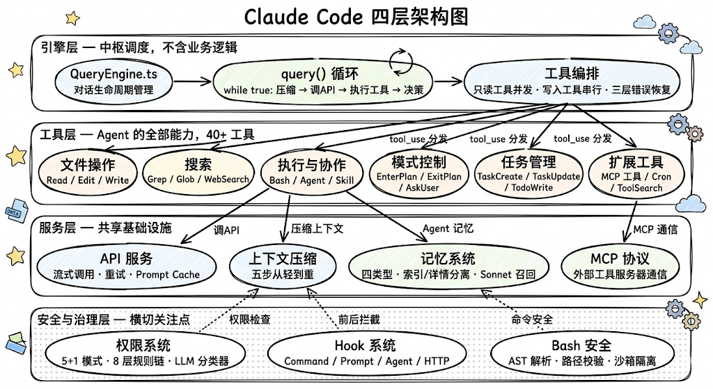
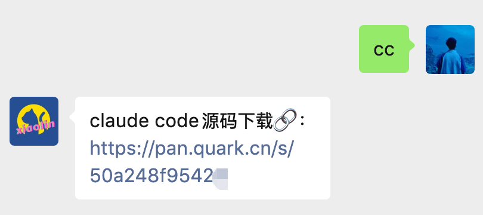

大家好，我是小林。
Claude Code 源码泄漏这个瓜，大家都吃了吧？
堂堂业界最强编程 Agent，就因为 npm 打包时配置手抖，不小心把 .map 文件一起传了上去，结果 51 万行核心代码直接全网裸奔。

面对这场史诗级乌龙，大家都忙着吃瓜，而懂行的第一反应都是：赶紧下载源码！毕竟这可是目前地表最强 Agent 的底牌。

先说清楚，这些泄漏的是 Claude Code 客户端的源码，并不是 Claude Opus 大模型的源码。
可能就有同学疑惑了，客户端源码有啥好看的？
说到这，不知道大家最近有没有注意到，AI 圈最近又造了一个新词，叫 Harness Engineering（线束工程），大家最近都刷到了吧？

听起来是不是特别唬人？每次 AI 圈一出这种高大上的新词，其实大半都是在「重新包装常识」。
说白了，这词的意思就是大家终于认清现实了：与其天天「做法」祈求大模型变聪明、别产生幻觉，不如老老实实给这匹野马套上缰绳（Harness）。用系统去约束它的行为，给它划好赛道，它才能稳稳当当出活。

这也是目前 AI 圈最真实的风向转变：从「拼模型智商」变成了「拼系统求稳」。
而这 51 万行的 Claude Code 源码，简直就是 Harness Engineering 的最佳教科书。
啃完你会发现，人家 80% 的代码根本不是在搞什么黑科技让 AI 更聪明，而是在死磕「可靠性」。
今天这篇文章，我就带大家一层一层把 Claude Code 的核心架构给扒明白。依旧硬核，2万字+
搞懂这些实打实的工程实践，未来不管是你自己手搓 Agent，还是去面试被问到相关架构设计，那绝对是妥妥的降维打击。
一、Claude Code 是什么
在拆源码之前，先简单介绍一下 Claude Code 到底是什么东西。
Claude Code 是 Anthropic 官方推出的编程 Agent 工具。你可以把它理解成一个能直接在你的终端里干活的 AI 程序员，它不是一个聊天窗口，而是真正能读你的代码、改你的文件、跑你的命令、帮你管理 Git 的那种。

说到底，Claude Code 的本质就是一个 AI Agent。但 Agent 这个词现在被用得太泛了，很多人会把它和聊天机器人搞混，所以我得先把这个概念说清楚。
很多人会把 AI Agent 和聊天机器人搞混。其实它们的区别很大。ChatBot 就是你问一句它答一句，一次性的问答。Copilot 呢，是你写代码时给你补全建议，本质上也是一次性预测。
Agent 的核心是一个「感知-决策-行动」的自主循环。你给它一个目标（比如「帮我修复这个 bug」），它会自己决定先读哪个文件、再跑什么命令、然后改哪行代码，整个过程可能循环几十轮，直到任务完成。

Claude Code 的 Agent 循环大概是这样的：

注意看这个循环的关键：大模型自己决定下一步做什么。
它不是按照预定义的流程图走的，而是每次看到当前的对话上下文后，自主判断「我现在应该读个文件」还是「我应该执行一条命令」还是「我可以回复用户了」
好，理解了 Claude Code 是什么、它的核心循环长什么样，接下来我们就可以开始看源码了。先从它的整体架构看起。
二、架构设计
一个能自主编程的 Agent 要处理的事情非常多：调大模型 API、执行 40 多种工具、管理权限、压缩上下文、维护记忆、支持多 Agent 协作……如果这些东西全部塞在一个文件里，代码会立刻变成一团乱麻。
那 Claude Code 是怎么组织这些子系统的？它采用了一个四层分层架构：

我们从上往下，一层一层来理解。
引擎层是 Agent 的「大脑」，负责思考和调度。它的关键设计原则是不包含任何业务逻辑，它不知道怎么读文件、怎么改代码、怎么搜索，这些全是工具层的事。引擎层只做三件事：第一，协调，把用户输入、系统指令、历史对话拼在一起，发给大模型；第二，分发，大模型说「我要用某个工具」时，找到对应的工具并执行；第三，决策，根据大模型的返回决定是继续循环还是结束对话。这种设计的好处是：新增能力只需要新增一个工具，引擎层完全不用改。 工具层是 Agent 的全部「能力」，40 多个工具都在这一层。每个工具就是 Agent 的一个能力：执行 Shell 命令、读写文件、搜索代码、生成子 Agent……这些工具不是随便写的，它们遵循一个统一的规范。这个规范不仅定义了「工具能做什么」，还强制定义了三个安全属性：这个工具是只读的还是会改东西的？它是否具有破坏性需要额外确认？它能不能和其他工具同时执行？这三个属性不是「建议加上」的，而是类型系统强制要求的，漏了任何一个，代码就编译不过。这意味着每一把刀都有刀鞘，从出厂就配好了安全机制。 服务层是所有层共享的「基础设施」。这一层包括三样东西：调大模型 API（不管是谁要调，主循环也好、子 Agent 也好，都走这一层）、上下文压缩（后面会详细讲的五步压缩策略）、MCP 协议（和外部工具服务器通信的标准接口）。你可以把它类比成大楼的水电煤，所有楼层都需要，但谁也不会自己去铺设管道。 安全与治理层有点特殊，它不像其他三层那样各管一块，而是像一张安全网罩在所有层上面。权限系统决定哪些操作需要用户确认、哪些可以自动执行；Hook 系统允许在工具执行前后插入自定义行为（比如「每次 git push 前自动跑 lint」）；Bash 安全模块会对 Shell 命令做语法级别的分析，检测命令注入、路径逃逸等危险模式，而不是简单地用正则匹配关键词。
三、Agent 工作模式
搞清楚了四层架构的宏观布局之后，一个自然的问题来了：引擎层那个主循环里，到底发生了什么？Agent 是怎么「思考」和「行动」的？它用的是什么 Agent 框架？是大家常说的 ReAct 模式吗？
这个问题值得深入聊聊，因为 Agent 的工作模式决定了整个系统的架构走向。
Claude Code 的答案可能出乎你的意料，它没有用 ReAct，而是用了一个更简洁、更高效的模式。
什么是 ReAct
如果你接触过 Agent 开发，大概率听说过 ReAct（Reasoning + Acting）。它是 2022 年提出的一种 Agent 范式，核心思路是把 Agent 的每一步拆成三个阶段：

具体来说，模型在每一轮都会先输出一段「思考」（Thought），比如「我需要先读取 config.ts 文件来了解数据库连接配置」；然后选择一个工具调用（Action）；最后拿到工具结果（Observation）。这三步不断循环，直到模型认为任务完成。
这个模式在 2022 年非常流行，因为当时的大模型（GPT-3.5 时代）推理能力有限，需要用显式的「Thought」步骤来引导模型一步步思考。

但 ReAct 有几个问题：
第一个问题：Token 浪费。 每一轮都要输出一段 Thought 文本，这些文本要作为上下文的一部分发给 API，占用了宝贵的 Token 预算。对于编程 Agent 来说，一次任务可能循环 50 轮，每轮都写一段「我打算先读取……然后分析……」的思考过程，加起来就是好几万 Token 的浪费。 第二个问题：应用层代码太复杂。 你需要解析模型的输出，区分「哪部分是 Thought、哪部分是 Action」，然后提取 Action 调用工具，再把 Observation 拼回去。这个解析过程写起来很麻烦，而且很容易出 bug，因为模型输出的格式不一定标准，一崩就全崩了。 第三个问题：ReAct 是为「弱模型」设计的。 当大模型的推理能力不够强时，用显式的 Thought 来「强迫」它一步步思考是有意义的。但 Claude Opus 这种级别的模型，推理能力已经足够强了，它完全可以在内部完成推理，不需要在输出里显式写出每一步的思考过程。
Tool-Use Loop
Claude Code 没有采用 ReAct 的 Thought-Action-Observation 三步循环，而是用了一个更简洁的模式，我把它叫做 Tool-Use Loop。
核心思路非常简单，就一个 while(true) 循环：

看到区别了吗？没有 Thought 步骤。
模型在内部完成推理（通过 Extended Thinking，这是 Claude Opus 的一个能力，模型在生成回复前会在内部进行一段不可见的深度推理，不占用上下文空间），然后直接返回两种结果之一：
**tool_use**：「我要用某个工具」，应用层执行工具，把结果拼入消息列表，继续循环**end_turn**：「我说完了」，跳出循环，把最终结果返回给用户

这个设计的核心哲学是：信任模型的推理能力，保持应用层框架尽可能简单。
来看 query.ts 中的核心循环，它的实际代码长这样（这是一段 TypeScript 代码，其中 yield 的作用是流式输出，你可以理解为一边接收 API 的响应，一边把每个 token 实时传给 UI 显示）：
async function* queryLoop(
params: QueryParams,
consumedCommandUuids: string[],
): AsyncGenerator<StreamEvent | Message, Terminal> {
let state: State = { messages, toolUseContext, turnCount: 1, ... }
while (true) {
// 步骤 1：压缩上下文（五步从轻到重）
// 步骤 2：调用大模型 API，流式接收
forawait (const event of streamAPI(params)) {
yield event // 流式输出每个 token
}
// 步骤 3：分析模型返回
if (response.stopReason === 'end_turn') break// 完成了，跳出循环
// 步骤 4：执行工具调用（并发/串行编排）
const toolResults = await executeToolCalls(toolUseMessages)
// 步骤 5：更新 state，继续循环
state = { ...state, messages: updatedMessages, turnCount: turnCount + 1 }
continue
}
}
注意 break 和 continue，模型说 end_turn 就 break 跳出循环，说 tool_use 就 continue 回到循环开头。整个决策逻辑就这么简单。
为什么比 ReAct 更好
你可能会问：不就是把 Thought 去掉了吗，有什么了不起的？区别其实很大，我列了三个关键原因：
第一，Extended Thinking 让推理在「模型内部」完成。 Claude Opus 支持 Extended Thinking，模型在生成最终回复之前，会在内部进行一段不可见的深度推理。这段推理发生在模型内部，不占用应用的上下文空间，也不需要应用层去解析。所以 ReAct 的 Thought 步骤在 Claude 的架构里是多余的，模型已经在内部「想好了」，不需要在外部输出中再写一遍。
第二，API 原生支持 tool_use。 Claude 的 API 原生支持工具调用，模型可以直接返回 tool_use 类型的响应，不需要用正则表达式从文本中提取「Action」。这消除了 ReAct 的格式解析问题，应用层代码变得极其简洁。
第三，end_turn 作为天然的终止信号。 ReAct 需要一套额外的规则来判断「Agent 是否完成了」，比如检测输出中是否包含「Final Answer」。而 Tool-Use Loop 用模型的 end_turn 信号作为终止条件，这是 API 层面的原语，语义清晰，不需要任何解析。
用一个表格来总结两者的区别：
| 维度 | ReAct | Tool-Use Loop |
|---|---|---|
Claude Code 的 Agent 工作模式可以总结为一句话：信任模型的推理能力，把应用层框架做得尽可能简单。
ReAct 的设计哲学是「帮模型思考」，用显式的 Thought 步骤引导模型一步步推理。这在弱模型时代是必要的。
但 Claude Code 面对的是 Opus 级别的强模型，它的推理能力完全可以在内部完成，不需要应用层去「教」它怎么想。
所以 Claude Code 的 Tool-Use Loop 只做最简单的事：调 API、执行工具、再调 API。推理交给模型，执行交给工具，编排交给最简单的 while(true) 循环。
这种「大道至简」的设计，反而是最高效的。
Plan Mode
Claude Code 不仅有 Tool-Use Loop 这种「边想边做」模式，还有 Plan Mode，一个更精细的两阶段工作流：先规划、再执行。

Plan Mode 的核心思想是：复杂任务应该先规划再执行，避免方向跑偏、浪费精力。它并不是一个独立的框架，而是在同一个 Tool-Use Loop 中通过 EnterPlanMode 和 ExitPlanMode 两个工具实现的：

整个流程分三步：
第一步：模型自主进入或用户手动触发。 当模型判断「这是一个复杂任务」时，它会调用 EnterPlanMode工具。对于简单任务（修 typo、加 console.log），则明确不进入。用户也可以通过 Shift+Tab 手动切换。第二步：只读探索 + 设计方案。 进入 Plan Mode 后，权限降为只读，模型只能用 Read、Grep、Glob 这些工具去探索代码库，不能写文件、不能改代码、不能跑命令。探索完后，把计划写入 .claude/plans/目录。每 5 轮对话，系统会偷偷给模型塞一张「小纸条」，提醒它「你现在还在 Plan Mode，别手痒改代码」，防止模型在长对话中「走神」。第三步：用户审批后实施。 模型调用 ExitPlanMode，此时需要用户确认。用户批准后，权限恢复为之前的模式，模型开始自由执行读写操作，按计划实施。
Plan Mode 最值得学习的设计是「工具即能力」。
对模型来说，Plan Mode 不是一种特殊的「模式切换」，而只是调用了 EnterPlanMode 和 ExitPlanMode 这两个工具。
就像调用 Read 工具读文件一样自然。整个过程不需要引擎层做任何特殊处理，query() 仍然只是一个简单的 while(true) 循环。
四、System Prompt 的构造
System Prompt 就是 Claude Code 的灵魂，它定义了 Agent 的身份、行为规范、可用工具、安全约束……一切。
但 Claude Code 的 System Prompt 不是一个静态的文本文件。它是动态组装的，由十几个 Section 拼接而成，而且在组装过程中做了非常精巧的缓存优化。

我们先来看一下，Claude Code 的 System Prompt 到底长什么样，它是怎么「调教」大模型变成一个靠谱的编程 Agent 的。
注：Claude Code 源码中所有 Prompt 原文均为英文。为了让大家更好地理解设计思路，下面展示的 Prompt 内容我翻译成了中文，并保留了关键术语的英文原文。
角色定义与安全红线
每个 Agent 的 System Prompt 都要回答一个根本问题：你是谁？Claude Code 的开场是这样的：
你是一个交互式代理（interactive agent），帮助用户完成软件工程任务。
请使用下面的指令和可用的工具来协助用户。
重要：你绝对不能为用户生成或猜测 URL，除非你确信这些 URL
是为了帮助用户完成编程任务。你可以使用用户在消息或本地文件中
提供的 URL。
注意两个关键点。第一，它把自己定位为「interactive agent」，而不是「assistant」或「chatbot」，这从一开始就暗示了模型应该主动采取行动，而不是被动回答。第二，立刻划了安全红线：不能乱编 URL。这
看起来是个小事，但对编程 Agent 非常重要，如果模型瞎编一个 npm 包的 URL，用户执行了就可能中招。
紧接着是一段安全约束指令，这段话非常值得每个 Agent 开发者抄作业：
重要：允许协助已授权的安全测试、防御性安全研究、CTF 挑战赛
和教育场景。拒绝涉及破坏性技术、DoS 攻击、大规模目标扫描、
供应链攻击或用于恶意目的的检测规避请求。
这段 Prompt 没有用「绝对不能做 X」的口吻，而是先说「可以做什么」（授权的安全测试、CTF 挑战），再划定「不能做什么」（DoS、供应链攻击）。
这种「先肯定再约束」的写法，比纯禁止清单效果好得多，它给了模型清晰的判断依据，而不是一堆模糊的红线。
行为准则
接下来是一大段关于「怎么做事」的行为指南，这部分是 Claude Code System Prompt 的精华。我挑几条最值得学习的：
关于修改代码前先阅读：
一般来说，不要对你没有阅读过的代码提出修改建议。如果用户
要求你查看或修改某个文件，先读一遍它。在提出修改建议之前，
先理解现有代码。
这条看起来简单，但解决了 Agent 的一个常见问题：很多 Agent 会根据用户描述直接生成代码，而不先看看现有代码是什么样的，结果经常和项目风格不一致或者引入重复实现。
关于代码风格：「少即是多」：
不要在用户要求之外添加功能、重构代码或进行"改进"。修一个 bug
不需要顺手清理周围的代码。一个简单功能不需要额外的可配置性。
不要为一次性操作创建辅助函数、工具类或抽象层。
三行相似的代码比一个过早的抽象更好。
这个设计思路太重要了。
如果你用过 Agent 写代码，你一定遇到过这种情况：你让它修一个 bug，它顺手把整个文件重构了，加了一堆你没要求的类型标注和错误处理。Claude Code 在 Prompt 里明确禁止了这种行为。
关于失败处理：「先诊断再换方案」：
如果某个方案失败了，先诊断原因再决定是否换方案——读报错信息、
检查你的假设、尝试有针对性的修复。不要盲目重试完全相同的操作，
但也不要因为一次失败就放弃一个可行的方案。
这条解决了 Agent 的另一个常见问题，「摆烂式重试」或「草率放弃」。Claude Code 要求模型先搞清楚为什么失败了，再决定是修复还是换方案，而不是两个极端。
操作安全
Claude Code 对「什么操作需要用户确认」做了非常详细的规定。我建议每个 Agent 开发者都研读这段 Prompt：
仔细考虑操作的可逆性（reversibility）和影响范围（blast radius）。
一般来说，你可以自由执行本地的、可逆的操作，比如编辑文件或
运行测试。但对于难以撤销、影响共享系统或有风险的操作，
请先和用户确认后再执行。
需要用户确认的高风险操作示例：
- 破坏性操作：删除文件/分支、删表、rm -rf
- 难以逆转的操作：force-push、git reset --hard、修改已发布的 commit
- 对他人可见的操作：推送代码、创建/关闭 PR、发送消息
- 上传到第三方工具：内容可能被缓存或索引，即使删除也无法撤回
这段的核心思想是用可逆性和影响范围两个维度来判断风险。读文件、改本地代码是低风险的（可逆、只影响本地），直接放行。git push、发 Slack 消息是高风险的（不可逆、影响他人），必须确认。
然后还有一句非常精妙的补充：
用户批准了某个操作（比如 git push）一次，并不意味着他在所有
场景下都批准这个操作。授权仅对指定的范围有效，不能超出范围。
这解决了「权限蔓延」的问题，用户同意了一次 push 不代表以后都自动 push，授权是一次性的、有范围的。这个原则在 Agent 权限设计中非常重要。
工具使用指南
当有专用工具可用时，不要用 Bash 来执行命令。使用专用工具可以
让用户更好地理解和审查你的工作。这一点至关重要：
- 读取文件用 Read 工具，而不是 cat、head、tail 或 sed
- 编辑文件用 Edit 工具，而不是 sed 或 awk
- 创建文件用 Write 工具，而不是 echo 重定向
- 搜索文件用 Glob 工具，而不是 find 或 ls
- 搜索内容用 Grep 工具，而不是 grep 或 rg
这条规则的设计动机值得深思。为什么不让模型直接用 cat 读文件、用 sed 改代码？技术上完全可以。
原因是可审查性。当模型调用 Read 工具读文件时，UI 会清晰地展示「Agent 正在读取 src/index.ts」。但如果模型执行 cat src/index.ts，用户看到的只是一条 Bash 命令和一大坨输出，完全不知道 Agent 在干什么。
而且，专用工具有专用的权限检查，Read 工具会检查文件路径是否在允许范围内，而 cat 命令就没有这层保护了。所以「用专用工具而不是 Bash」不仅是体验问题，更是安全问题。
Git 安全协议
Claude Code 对 Git 操作有一套非常严格的安全协议，这段 Prompt 写得极其细致：
Git 安全协议：
- 绝不修改 git config
- 绝不执行破坏性 git 命令（push --force、reset --hard、
checkout .、clean -f），除非用户明确要求
- 绝不跳过 hooks（--no-verify），除非用户明确要求
- 绝不 force push 到 main/master 分支，如果用户要求则发出警告
关键：始终创建新的 commit（NEW commit），而不是用 --amend 修改。
当 pre-commit hook 失败时，commit 实际上并没有发生——所以
--amend 会修改上一个（不相关的）commit，可能导致代码丢失。
正确做法是：修复问题后创建一个新的 commit。
最后一条关于 --amend 的警告特别值得注意。
很多人（包括一些 Agent 实现）在 commit 失败后会习惯性地 git commit --amend。但如果失败原因是 pre-commit hook 拒绝了，那么 commit 实际上没发生！
这时候 --amend 会修改上一个（不相关的）commit，可能导致代码丢失。这种微妙的 bug 很难被发现，Claude Code 直接在 Prompt 里防住了。
输出风格约束
Claude Code 对模型的输出风格也有严格规定：
# 输出效率
直奔重点。先尝试最简单的方案。要极度简洁。
工具调用之间的文字不超过 25 个词。最终回复不超过 100 个词。
先给出答案或行动，而不是推理过程。跳过填充词、开场白和
不必要的过渡句。不要复述用户说过的话——直接做就行。
25 个词的限制非常苛刻，这意味着模型在两次工具调用之间，基本只能说一句话。这个设计的目的是避免 Agent 「话痨」，没人想看 Agent 在每次读文件前先写一段「让我来看看这个文件的内容……」的废话。
环境信息注入
每次对话开始时，Claude Code 会把当前环境信息注入 System Prompt：
# 环境信息
- 主工作目录：/Users/you/my-project
- 是否为 Git 仓库：是
- 操作系统平台：darwin (macOS)
- Shell 类型：zsh
- 当前模型：Claude Opus 4.6 (1M context)
- 知识截止日期：2025 年 5 月
这些信息让模型知道自己「在哪里」，是什么操作系统、什么 Shell、什么项目目录。没有这些信息，模型可能会在 macOS 上执行 apt-get install，或者在 zsh 环境里用 bash 语法。
分割线与三级缓存
了解了各个 Section 的内容，我们回到一个很实际的问题：这些 Section 是怎么组装到一起的？为什么组装方式会影响费用？
先看一段组装后的 System Prompt 长什么样（简化版）：
┌─────────────────────────────────────────────────┐
│ [角色定义] 你是一个交互式代理，帮助用户完成... │ ← 所有用户完全一样
│ [安全红线] 重要：允许协助已授权的安全测试... │ ← 所有用户完全一样
│ [行为准则] 一般来说，不要对你没有阅读过的代码... │ ← 所有用户完全一样
│ [操作安全] 仔细考虑操作的可逆性... │ ← 所有用户完全一样
│ [工具使用] 当有专用工具可用时... │ ← 所有用户完全一样
│ [Git 安全] 绝不修改 git config... │ ← 所有用户完全一样
│ [输出风格] 直奔重点，要极度简洁... │ ← 所有用户完全一样
├────── __SYSTEM_PROMPT_DYNAMIC_BOUNDARY__ ────────┤
│ [环境信息] 主工作目录: /Users/you/my-project │ ← 每个用户不一样
│ [CLAUDE.md] 本项目使用 TypeScript + Jest... │ ← 每个项目不一样
│ [记忆指令] 你有一个持久记忆系统... │ ← 每次对话可能不一样
│ [MCP 指令] 你已连接 GitHub MCP server... │ ← 每个用户不一样
└─────────────────────────────────────────────────┘

看到中间那条粗线了吗？那就是 Claude Code 在 System Prompt 中插入的分割标记 __SYSTEM_PROMPT_DYNAMIC_BOUNDARY__。
分割线之上的内容，对所有用户都完全一样。 不管你是北京的 Java 工程师还是纽约的 Python 开发者，你看到的「角色定义」「行为准则」「Git 安全协议」这些内容是一模一样的。
分割线之下的内容，每个用户都不同。 你的工作目录、你的 CLAUDE.md、你的记忆文件、你连接的 MCP 服务，这些是因人而异的。

为什么要这么分？因为 Claude API 有一个 Prompt Cache 机制：如果两次请求的 Prompt 前缀完全相同，API 会复用上次的计算结果，**费用可以降低 90%**。对于几万 Token 的 System Prompt 来说，缓存命中与否意味着每次请求几美分和几美元的差距。
分割线之上的内容对所有用户都一样，所以可以全球所有用户共享同一份缓存——你用的和东京的开发者用的是同一份。而分割线之下的内容因人而异，没法共享，只能实时生成。
这就是 Claude Code 的三级缓存体系：全局缓存（分割线之上，跨组织跨用户共享）→ 组织缓存（同一组织内跨会话共享）→ 会话缓存（同一个 Section 在一次会话内只计算一次）。每一级都在帮 API 省钱。
小结
回过头来看 Claude Code 的 System Prompt，你会发现它其实在做一件事：用最小的 Token 成本，给模型划出最清晰的行为边界。
怎么划的呢？我总结了三个最值得抄作业的设计。
第一个是「先给范围再画红线」。比如安全约束那段，它不是一上来就说「不准做这不准做那」，而是先说「安全测试、CTF 挑战这些可以做」，然后再说「DoS、供应链攻击这些不能做」。这比你写十句「不准 XX」管用得多，因为模型拿到了判断标准，而不是一堆模糊的禁令。

第二个是「用两个维度把风险分出层次」。Claude Code 判断一个操作安不安全，不看它「看起来危不危险」，而是看两件事：这操作能撤回吗？会影响别人吗？改本地代码当然能撤回、只影响自己，直接放行。git push 撤不回来、别人能看到，那就得确认。这个思路比笼统的「危险/安全」二分法精细太多了。

第三个是「静态内容和动态内容用分割线隔开」。那条分割线不是随便画的，它把所有用户都一样的部分和因人而异的部分切开了。这样做的好处是，分割线之上的内容可以被全球所有用户共享缓存，每次 API 调用能省 90% 的费用。一个看似简单的排版调整，背后是实打实的成本优化。

五、记忆系统
每次启动 Claude Code 都是一个全新的会话，模型不记得上次对话的任何内容。但用户的偏好、项目背景、行为反馈，这些信息需要跨会话保持。
这个问题看起来简单，做起来却非常难。业界常见的方案是用向量数据库，把记忆存成 embedding，每次对话时做相似度检索。

但 Claude Code 没有这么做。为什么？
因为 Agent 需要记住的大部分不是「相似的文档片段」，而是「用户说过'不要 mock 数据库'」这种结构化的行为指令。
用向量相似度去检索「不要 mock 数据库」这句话，效果其实很差，它可能匹配到一堆包含「数据库」关键词的无关内容，真正重要的行为反馈却被淹没了。
Claude Code 设计了一套完全不同的记忆系统，我们来一层一层拆解。
记什么：四类型分类
Claude Code 把记忆分成了四种明确的类型：
export const MEMORY_TYPES = [
'user', // 用户画像：角色、偏好、知识水平
'feedback', // 行为反馈：该做什么、不该做什么
'project', // 项目动态：在做什么、截止日期、协作信息
'reference', // 外部指针：哪里能找到什么信息
] as const
注意，只有这四种，不能随便加新的。

为什么不搞一个通用的「any」类型什么都能存？因为无约束的记忆会迅速膨胀成垃圾堆。
限定四种类型，就是在逼 Agent 做分类决策。每存一条记忆，它必须想清楚「这到底属于哪一类」，而不是一股脑往里塞。
我逐个解释一下这四种类型的设计意图。
User（用户画像）是最个人化的一类，记住用户是谁、擅长什么、知识水平如何。比如用户说「我是一个写了十年 Go 的后端工程师，第一次接触 React」，Agent 就应该在解释前端概念时用后端的类比，而不是从零讲起。这类记忆让 Agent 的回答因人而异，而不是千篇一律。

Feedback（行为反馈）是最重要的一类，记住用户说过「不要做什么」和「做得好继续保持」。这类记忆的关键在于，它不仅记规则本身，还要求记录 Why（为什么） 和 How to apply（怎么应用）：
规则本身：集成测试必须使用真实数据库，不能用 mock
Why：上季度 mock 测试全部通过但生产环境迁移失败了
How to apply：在这个模块写测试时，始终连接真实数据库
为什么一定要记 Why？因为光记住「不要 mock 数据库」是不够的。如果遇到一个边缘情况，比如一个纯单元测试不涉及数据库迁移，Agent 需要根据 Why 来判断「这条规则在这个场景下是否适用」。没有 Why，Agent 只能盲目遵守，可能在不该用真实数据库的地方也强行连接。

Project（项目动态）记的是「正在发生什么」，谁在做什么、截止日期是什么、有什么重要决策。这类记忆有一个特殊要求：必须把相对日期转成绝对日期。用户说「周四之前冻结合并」，Agent 要存成「2026-03-05 之前冻结合并」，因为「周四」过几天就没意义了，但「2026-03-05」永远准确。

Reference（外部指针）记的是「去哪找什么信息」，Bug 在 Linear 的哪个项目里追踪、Grafana 看板的地址是什么、Slack 的哪个频道能问到相关的人。这类记忆的价值在于，Agent 不需要知道外部系统的具体内容，只需要知道去哪里找。

不记什么：排除清单
Claude Code 明确规定了什么不应该存到记忆里，这个设计和「记什么」同样重要。

首先是代码模式、项目架构和文件结构这些信息，通过 grep、git、CLAUDE.md 就能获取，存在记忆里反而会导致记忆和代码实际状态不一致。
然后是 Git 历史和最近的改动，git log 和 git blame 才是权威来源，不需要记忆系统再来存一遍。调试方案和修复方法也不存，因为修复已经在代码里了，commit 消息已经记录了上下文。
CLAUDE.md 里已经写了的内容也不存，避免重复。最后是临时任务状态和当前对话上下文，这些是会话级的信息，不需要跨会话保持。
这个排除清单背后的核心原则是：可以从当前代码推导出来的信息，一律不存。
因为代码是「活的」，它随时在变，但记忆是「死的」，它存下来就定格了。如果记忆说「AuthService 在 src/auth.ts 第 42 行」，但代码已经重构了，那这条记忆就变成了一个「权威的错误」，比没有记忆还糟糕。
怎么存：索引 + 独立文件
搞清楚了「记什么」和「不记什么」，接下来看「怎么存」。
每条记忆存为一个独立的 .md 文件，文件开头有一段 YAML 格式的元信息（你可以理解为这条记忆的「身份证」）：
---
name: no-mock-database
description: 集成测试必须使用真实数据库，不能用 mock
type: feedback
---
集成测试必须使用真实数据库，不能用 mock。
**Why:** 上季度 mock 测试全部通过但生产环境迁移失败了。
**How to apply:** 在这个模块写测试时，始终连接真实数据库。
文件开头那段 YAML 格式的元信息里，三个字段各有用途：name 是人类可读的标识；description 是一句话摘要，专门用于检索时的相关性匹配（后面会讲到）；type 标记四类型之一。
然后有一个 MEMORY.md 文件作为索引，它是一个不超过 200 行（25KB）的轻量目录：
- [No Mock Database](feedback_no_mock_db.md) — tests must use real DB
- [User Preferences](user_preferences.md) — prefers terse responses
- [Auth Rewrite](project_auth_rewrite.md) — driven by compliance, not tech debt
注意这个 200 行的硬性上限。为什么要限制？来看源码里的截断逻辑：
export const MAX_ENTRYPOINT_LINES = 200
exportconst MAX_ENTRYPOINT_BYTES = 25_000 // 25KB
exportfunction truncateEntrypointContent(raw: string): EntrypointTruncation {
// 同时检查行数和字节数上限
const wasLineTruncated = lineCount > MAX_ENTRYPOINT_LINES
const wasByteTruncated = byteCount > MAX_ENTRYPOINT_BYTES
if (wasLineTruncated || wasByteTruncated) {
// 截断并附加警告
return {
content: truncated + '\n\n> WARNING: MEMORY.md 太大了...',
// ...
}
}
}
它同时检查行数和字节数两个维度。为什么要两个？因为有人可能写了 199 行，每行 500 字，行数没超但字节数爆了。双重检查堵住了这个漏洞。
现在来看整个存储架构的关键设计：MEMORY.md 索引始终被加载到 System Prompt 里，但独立记忆文件按需加载。

这解决了一个经典矛盾，如果把所有记忆都塞进 System Prompt，50 条记忆就可能占满上下文；如果完全不塞，Agent 又不知道有哪些记忆可用。
索引文件两全其美：Agent 看到索引就知道有哪些记忆，但只加载真正相关的那几条。
怎么召回：Sonnet 当秘书
存好了记忆，关键问题来了：每次对话时，怎么从几十条记忆里挑出最相关的那几条加载进来？
Claude Code 的做法非常巧妙，用一个廉价的小模型（Sonnet）来做记忆检索。

整个召回流程分为三步：
第一步：扫描所有记忆文件的「头部信息」
export asyncfunction scanMemoryFiles(
memoryDir: string,
signal: AbortSignal,
): Promise<MemoryHeader[]> {
const entries = await readdir(memoryDir, { recursive: true })
const mdFiles = entries.filter(
f => f.endsWith('.md') && basename(f) !== 'MEMORY.md',
)
// 只读每个文件的前 30 行（frontmatter 区域），不读全文
const headers = awaitPromise.allSettled(
mdFiles.map(async (relativePath) => {
const { content, mtimeMs } = await readFileInRange(
filePath, 0, 30, // 只读前 30 行！
)
const { frontmatter } = parseFrontmatter(content)
return {
filename: relativePath,
description: frontmatter.description || null,
type: parseMemoryType(frontmatter.type),
mtimeMs, // 文件修改时间，用于后续的新旧度判断
}
}),
)
// 按修改时间倒序，最多 200 个
return headers.sort((a, b) => b.mtimeMs - a.mtimeMs)
.slice(0, 200)
}
注意它只读每个文件的前 30 行，足够提取文件开头那段元信息里的 name、description、type，但不会读取记忆的完整内容。这样即使有 200 个记忆文件，扫描开销也很小。
第二步：拼成清单，发给 Sonnet 做选择。
扫描完之后，所有记忆的「头部信息」被拼成一个文本清单：
- [feedback] feedback_no_mock.md (2026-03-28): 集成测试必须使用真实数据库
- [user] user_preferences.md (2026-03-25): 用户是后端工程师，偏好简洁回复
- [project] project_auth.md (2026-03-20): 认证模块重写由合规需求驱动
然后把这个清单连同用户当前的输入一起发给 Sonnet：
const result = await sideQuery({
model: getDefaultSonnetModel(),
system: '你是一个记忆选择器，从列表中选出最多 5 条与用户问题最相关的记忆...',
messages: [{
role: 'user',
content: `用户问题: ${query}\n\n可用的记忆:\n${manifest}`,
}],
max_tokens: 256, // 只需要返回文件名列表，非常短
})
Sonnet 返回的只是一个文件名列表（比如 ["feedback_no_mock.md", "project_auth.md"]），不是记忆内容本身。
第三步：加载选中记忆的完整内容，注入上下文。
拿到文件名列表后，系统才去读取这几条记忆的完整内容，作为 <system-reminder> 注入当前对话。
这里还有一个非常讲究的细节，记忆陈旧度检测。对于超过 1 天的记忆，系统会自动附加一段警告：
export function memoryFreshnessText(mtimeMs: number): string {
const d = memoryAgeDays(mtimeMs)
if (d <= 1) return''// 今天或昨天的记忆不加警告
return (
`这条记忆已经有 ${d} 天了。` +
`记忆是某个时间点的观察，不是实时状态——` +
`其中关于代码行为或 file:line 引用的断言可能已经过时。` +
`在当作事实引用之前，请先对照当前代码验证。`
)
}
为什么需要这个？因为用户可能 30 天前存了一条记忆说「AuthService 在 src/auth.ts 第 42 行使用了 JWT」，但代码早就改了。如果模型盲目相信这条记忆，就会给出错误的建议。陈旧度警告提醒模型「这个信息可能过时了，先验证再引用」。
性能优化：并行预取
最后一个值得学习的设计：记忆召回的执行时机。
Sonnet 侧查询不是在主模型需要时才触发的，而是在用户提交消息后立刻就开始了，和主模型的 API 调用并行执行：
// query.ts 中的调用——在进入主循环之前就启动记忆预取
using pendingMemoryPrefetch = startRelevantMemoryPrefetch(
state.messages,
state.toolUseContext,
)
时序大概是这样的：

Sonnet 比 Opus 快得多（延迟通常只有几百毫秒），所以等主模型的响应回来时，记忆选择早就完成了。整个记忆召回过程几乎不增加任何额外延迟。
还有一个小优化：如果用户当前正在使用某些工具（比如正在调用某个 MCP 工具），Sonnet 选择器会自动过滤掉该工具的使用文档类记忆，因为模型已经在用这个工具了，它的用法文档此刻是噪声，不是信号。
但「该工具的已知 bug 和注意事项」类记忆仍然会被选中，正在用的时候，恰恰是最需要知道坑在哪里的时候。
小结
回顾一下 Claude Code 的记忆系统，它的核心设计哲学可以用三句话概括。

第一句是「记该记的，不记能推导的」。通过四类型封闭集合加上排除清单，把记忆控制在有价值的范围内，防止它膨胀成一个什么都往里塞的垃圾堆。 第二句是「存索引，按需加载详情」。MEMORY.md 作为轻量索引始终常驻在 System Prompt 里，但每条记忆的具体内容是独立文件，用到的时候才加载。这样既让 Agent 知道有哪些记忆可用，又不会撑爆上下文。 第三句是「用小模型做秘书，大模型做决策」。Sonnet 负责并行预取和选择记忆，Opus 只管做决策，加上陈旧度检测机制，实现了零延迟、低成本、高可靠。
六、上下文窗口管理
这可能是整个 Claude Code 里最复杂也最精妙的部分。
大模型有上下文窗口限制。即使是 200K Token 的窗口，一次复杂的编程任务（读了几十个文件、执行了几十条命令）很容易就塞满了。

业界常见的做法是「简单截断」，只保留最近的 N 条消息，旧的扔掉。但这对于编程 Agent 来说是灾难性的：你可能 20 轮前读过一个关键配置文件，现在要改代码时那个文件的信息已经被截掉了，Agent 就会犯低级错误。
另一种做法是「全量摘要」，把整段对话总结成一段摘要。但这很贵（摘要本身就是一次 API 调用），而且有信息损失。
压缩五步走
Claude Code 的核心理念是：压缩一定有信息损失，所以能不压就不压，必须压的时候从最轻的手段开始。
它设计了五个从轻到重的压缩手段，就像医院的分诊制度一样：先试最温和的，不行再上猛药。在每次 API 调用前依次尝试：

为什么要分五步，而不是一步到位做全量摘要？
因为每一步的「代价」是递增的。
第 1 层几乎没有信息损失，完整内容还在磁盘上，只是不在上下文里了。 第 2、3 层有少量信息损失，丢掉了老的工具输出，但模型随时可以重新获取。 第 4 层有中等信息损失，对话细节被分段压缩了。 第 5 层信息损失最大，整段对话变成一段摘要。
所以 Claude Code 的策略是：先用代价最小的手段，实在不行再升级。
大部分情况下，前三层就够用了，根本不需要触发昂贵的全量摘要。
接下来我们一层一层拆解。
第 1 步：大结果存磁盘
问题是什么？ 想象一下，你让 Agent 读一个 10MB 的日志文件。Read 工具忠实地返回了全部内容，一下子就吃掉了几万 Token。更夸张的是，如果模型同时读了 3 个大文件，一条消息就可能占掉大半个上下文窗口。

Claude Code 怎么做？ 它在工具结果进入消息列表之前，就先做一道「体检」：
async function maybePersistLargeToolResult(
toolResultBlock: ToolResultBlockParam,
toolName: string,
): Promise<ToolResultBlockParam> {
const size = contentSize(content)
// 单个工具结果超过阈值（默认约 50KB）？
if (size <= threshold) {
return toolResultBlock // 没超，原样通过
}
// 超了！把完整内容存到磁盘文件
const result = await persistToolResult(content, toolUseId)
// 用一个 2KB 的预览替换原内容
const preview = buildLargeToolResultMessage(result)
return { ...toolResultBlock, content: preview }
}
它的逻辑很简单：如果单个工具的结果超过约 50KB，就把完整内容写到磁盘上，在消息里只留一个 2KB 的预览摘要。这样模型还是能看到文件的大概内容（前 2KB），但不会撑爆上下文。

除了单个工具的限制，还有一个消息级的总量控制，同一条消息里所有工具结果的总大小不能超过 200KB。如果超了，系统会挑出最大的那几个结果存磁盘，直到总量降到限制以内。
这一层的精妙之处在于：完整内容并没有丢，它还在磁盘上。如果模型后面真的需要那个大文件的某个片段，它可以再次调用 Read 工具去读取特定的行范围。
第 2 步：砍掉远古消息
问题是什么？ 一次长对话可能有上百轮。对话开头那几轮的内容，比如用户最初的探索性提问、模型早期的试探性回答，到了后面几乎完全没用了。但它们仍然占着宝贵的上下文空间。

Claude Code 怎么做？ Snip 是最「粗暴」但也最高效的一层，直接把对话开头的一批老消息移除掉，然后插入一个边界标记告诉模型「这之前的内容已经被清理了」。
if (feature('HISTORY_SNIP')) {
const snipResult = snipModule.snipCompactIfNeeded(messagesForQuery)
messagesForQuery = snipResult.messages
snipTokensFreed = snipResult.tokensFreed
if (snipResult.boundaryMessage) {
yield snipResult.boundaryMessage // 插入边界标记
}
}
它不做任何摘要，不总结「前面聊了什么」，直接砍掉。听起来很暴力，但对于那些确实已经完全过时的消息来说，这是代价最低的做法，因为它不需要额外调用大模型来生成摘要，零 API 开销。

还有一个重要的细节：Snip 会把「我释放了多少 Token」这个数字（snipTokensFreed）传给后面的第 5 层 Auto-Compact。
为什么？因为 Auto-Compact 是根据「当前上下文占了多少 Token」来决定是否触发的。如果 Snip 已经释放了足够的空间，Auto-Compact 就不需要触发了，避免两层同时做无谓的压缩。
第 3 步：裁剪老的工具输出
问题是什么？ 经过前两层之后，上下文里剩下的都是「不太老但也不太新」的消息。
这些消息不能直接砍掉（可能还有用），但里面大量的工具输出其实已经过时了，比如 30 分钟前读的一个文件，现在那个文件可能已经被改过了。

Claude Code 怎么做？ Micro-Compact 的核心思想是时间衰减：越老的工具结果越不重要，可以被裁剪。但是，不是所有工具的结果都能裁剪：
const COMPACTABLE_TOOLS = new Set([
FILE_READ_TOOL_NAME, // 读文件 → 可以重新读
...SHELL_TOOL_NAMES, // 执行命令 → 可以重新执行
GREP_TOOL_NAME, // 搜索 → 可以重新搜
GLOB_TOOL_NAME, // 查找文件 → 可以重新查
WEB_SEARCH_TOOL_NAME, // 搜索网页 → 可以重新搜
FILE_EDIT_TOOL_NAME, // 编辑文件 → 结果可裁剪
FILE_WRITE_TOOL_NAME, // 写文件 → 结果可裁剪
])
看到规律了吗？可以被裁剪的，都是「可重新获取」的工具，Read 的结果可以再读一次，Bash 的输出可以再执行一次，搜索结果可以再搜一次。
但 AgentTool（子 Agent 的输出）、TaskTool（任务状态）这类工具的结果永远不会被裁剪，因为子 Agent 的推理过程是不可重复的，砍掉就真的丢了。

具体裁剪逻辑是「保留最近 N 个，清理其余的」：
// 收集所有可裁剪工具的结果 ID
const compactableIds = collectCompactableToolIds(messages)
// 保留最近 5 个，其余全部清理
const keepRecent = Math.max(1, config.keepRecent) // 至少保留 1 个
const keepSet = new Set(compactableIds.slice(-keepRecent))
const clearSet = compactableIds.filter(id => !keepSet.has(id))
被裁剪的工具结果会被替换成一个标记：
export const TIME_BASED_MC_CLEARED_MESSAGE =
'[Old tool result content cleared]'
这样模型看到这个标记就知道「这里原来有内容但被清理了」。
如果它后面还需要这些信息，它可以自己决定重新读文件或重新执行命令。
为什么叫「时间衰减」？
因为它的触发条件跟时间有关，当距离上一次 API 调用超过一定时间（默认约 60 分钟），说明大模型 API 端的 Prompt Cache 大概率已经过期了。
既然缓存已经没了，那清理旧的工具结果也不会浪费之前的缓存投入。
第 4 步：读时投影
问题是什么？ 经过前三层后，如果上下文还是太大，下一步就得做全量摘要了。
但全量摘要代价很高（要额外调一次 API），而且会把整段对话的细节全部丢掉。有没有一个「中间态」，比全量摘要轻，但比 Micro-Compact 重？

Claude Code 怎么做？ Context Collapse 引入了一个非常巧妙的概念，读时投影（Read-Time Projection）。
什么意思呢？前面三层都是「写时压缩」，直接修改消息列表，把内容替换掉或删掉。但 Context Collapse 不修改原始消息，它只在调用 API 的那一刻，动态计算一个「压缩视图」给模型看。
// 这是 query.ts 中的调用
// 注意：这是一个"读时投影"——不修改 REPL 的完整历史，
// 只在发送给 API 时计算压缩视图
if (feature('CONTEXT_COLLAPSE') && contextCollapse) {
const collapseResult = await contextCollapse.applyCollapsesIfNeeded(
messagesForQuery,
toolUseContext,
querySource,
)
messagesForQuery = collapseResult.messages
}
它的触发有两级阈值：
90% 上下文窗口：主动开始分段压缩旧消息（预留缓冲区） 95% 上下文窗口：紧急压缩更多内容（留足 API 响应空间）
这个设计最精妙的地方是它和第 5 层的配合：Context Collapse 运行在 Auto-Compact 之前。
如果 Context Collapse 已经通过「读时投影」把上下文压到了阈值以下，Auto-Compact 就完全不需要触发了。这样模型保留了更多的细节上下文，而不是被一段粗糙的全量摘要替代。
第 5 步：全量摘要
问题是什么？ 当前面四层都不够用，上下文实在太大了，必须做一次彻底的压缩。这是代价最高但效果最强的一层。
什么时候触发？ Claude Code 用一个公式计算触发阈值：
function getAutoCompactThreshold(model: string): number {
const effectiveContextWindow = getEffectiveContextWindowSize(model)
// 有效窗口 - 13K 缓冲区 = 触发阈值
return effectiveContextWindow - 13_000
}
以 200K Token 的模型为例：有效窗口大约 180K（预留 20K 给输出），减去 13K 缓冲区，当上下文达到 167K Token 时触发。

触发后做了什么？ 三步走：
第一步：生成摘要。调用大模型，把整段对话总结成一段结构化摘要。这个摘要不是随便写的，Claude Code 用一个精心设计的 Prompt 要求模型按多个维度来总结：用户的主要请求和意图、关键技术概念、涉及的文件和代码片段、遇到的错误和修复方案、问题解决过程、用户的所有消息（不能遗漏任何一条）、待完成的任务、当前工作状态、建议的下一步。

为什么要这么细？因为压缩后模型要靠这段摘要来「恢复记忆」。如果摘要漏掉了关键信息（比如「用户还有一个待完成的任务」），模型就会忘记这件事。
第二步：替换旧消息。把压缩边界之前的所有消息删掉，替换为刚才生成的摘要。同时插入一条边界标记消息，记录压缩前的 Token 数，方便后续追踪。

第三步：Post-Compact Restoration（压缩后恢复）。这是整个流程中最关键的一步，压缩完不是就完了，还要主动恢复最重要的上下文：
export const POST_COMPACT_MAX_FILES_TO_RESTORE = 5
export const POST_COMPACT_TOKEN_BUDGET = 50_000
export const POST_COMPACT_MAX_TOKENS_PER_FILE = 5_000
export const POST_COMPACT_SKILLS_TOKEN_BUDGET = 25_000
系统会从文件状态缓存（fileStateCache）中找出最近访问过的文件，按最后访问时间排序，挑选最多 5 个、总共不超过 50K Token 的文件内容重新注入。同时恢复活跃的 Skill（不超过 25K Token），如果有进行中的 Plan 也会恢复 Plan 文件。

为什么要做恢复？因为压缩后模型「失忆」了，它不记得刚才读过的文件内容了。
如果不恢复，模型的第一反应就是「让我重新读一下文件」，白白浪费一轮工具调用。主动恢复最近的文件内容，可以让模型无缝继续工作，体验上几乎感觉不到压缩发生过。
还有一个兜底机制：如果全量摘要连续失败 3 次（比如 API 超时），系统会自动放弃，不会无限重试，这就是熔断器 模式，防止一个失败的压缩操作拖垮整个 Agent。
小结
回顾一下这五步压缩策略，它们体现了一个核心设计哲学：能轻则轻，逐步加码。
| 层级 | 手段 | 信息损失 | API 开销 | 触发条件 |
|---|---|---|---|---|
越往下代价越高，但效果也越强。
大部分场景下前三层就足够了，它们完全不需要额外的 API 调用，只是「搬运」和「裁剪」数据。只有在极端情况下，才需要触发昂贵的全量摘要。
这种设计的另一个好处是各层相互协调。
第 2 层 Snip 会告诉第 5 层「我已经释放了多少 Token」，避免重复压缩。第 4 层 Context Collapse 在第 5 层之前运行，如果它够用了，第 5 层就不触发。
每一层都在为下一层「减负」。
写在最后
说真的，啃完这 51 万行源码，我整个人是有点懵的。
Claude Code 源码里有太多优秀的 Agent 技术落地方案。
比如压缩上下文要分五步走、记忆要分四种类型存、System Prompt 设计……
每一件事单拿出来都算不上什么黑科技，但全串在一起，就是一套能把一匹野马驯成耕牛的缰绳系统。
这给我一个很大的启发：做 Agent，别老盯着模型发呆。模型是发动机，但一辆车能不能安全上路，靠的是刹车、方向盘、安全带。这些「不起眼」的东西，才是真正决定成败的。
最后调侃一句，Claude Code 源码泄漏这波操作，无疑将极大地缩短国内外 AI Agent 的信息差，全面利好国产 Agent 的爆发式发展！
好了，今天就聊到这。如果觉得有收获，别忘了点赞转发，这对小林真的很重要！
👉🏻 完整源码我存了一份，想要获取完整Claude Code源码的同学可以点我头像，私信「cc」获取，手慢无！

💪面试突击资源推荐：
✅小林图解网站： xiaolincoding.com
✅简历制作网站：jianli.xiaolinnote.com
✅资料获取：图解系列+面试题PDF下载
✅刷题闯关+模拟面试：牛面Offer小程序
✅后端训练营：Java/Go 后端训练营
✅大模型训练营：转行去做大模型开发了
✅做项目：AI Agent 项目